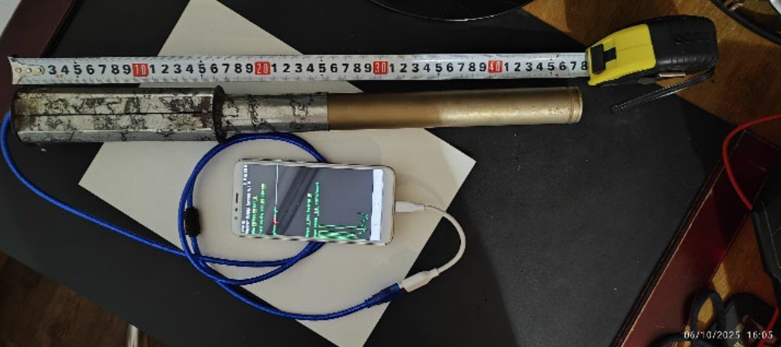
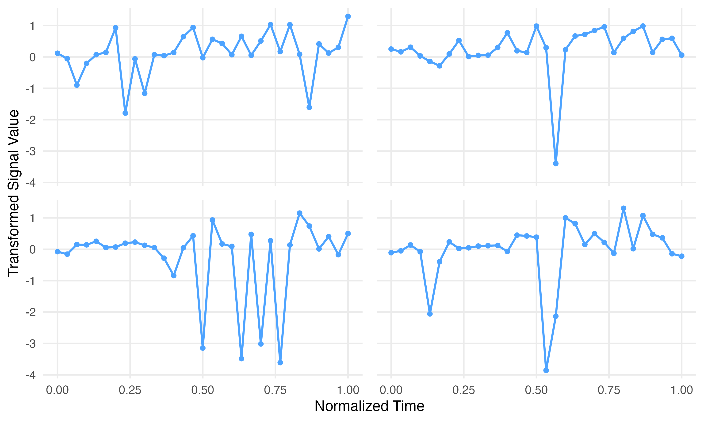
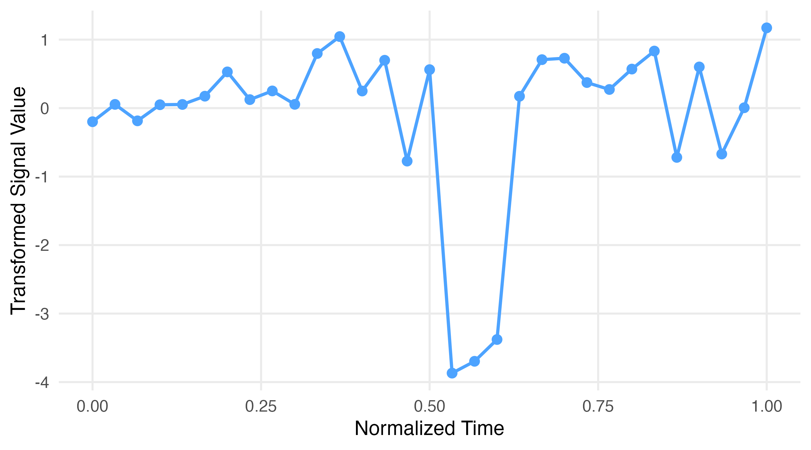
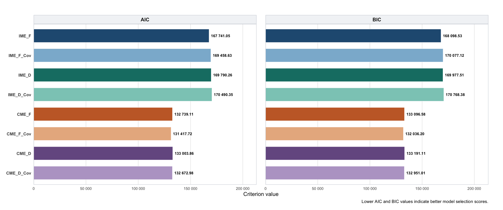

Model-based functional clustering with correlated errors for neutron detector signal analysis
Joint work with:
Natalya Pya Arnqvist
Arman S. Kussainov
Per Arnqvist
Department of Mathematics and Mathematical Statistics, Umeå University
November 2026
Rana Bamdadi
rana.bamdadi@umu.se
Outline
- Background and Motivation
- Model-Based Functional Clustering
- Results and Model Comparison
- Conclusions
Background: Neutron Detection System
- A custom-built neutron detection system combines a ³He proportional counter with an Android smartphone.
- Neutron interactions generate electrical pulses.
- The signals are amplified, digitized, and recorded through an Android-based acquisition system.
- Pulse shapes and amplitudes vary due to differences in particle interactions, detector response, and overlapping events.

Experimental neutron detection setup
Motivation: Why Cluster Neutron Detector Signals?
Why clustering?
- Recorded signals exhibit different pulse shapes and amplitudes.
- Variations may arise from neutron interactions, gamma-ray events, electronic noise, or overlapping signals.
- Traditional threshold-based methods may not fully capture the diversity of recorded pulse shapes.
- Functional clustering identifies groups of signals with similar shapes without requiring known event labels.
Examples of recorded signals

Data Description: Neutron Detector Signals
Dataset
- 2,152 recorded signal frames from a helium-3 proportional counter.
- Each signal contains 31 observations over approximately 6.2 ms.
- Sampling frequency: 5,000 Hz.
- Measurements are digitized detector outputs (ADC counts), with a baseline of approximately 511 counts.
- Two signal-level covariates are available: mean and standard deviation.
Data acquisition
- The Android application records candidate events when a sudden signal drop is followed by rapid recovery.
- Recorded signals are analyzed without additional shape-based filtering.
Example of a transformed detector signal

Model-based Functional Clustering
What is Model-based Functional Clustering?
Model-based functional clustering assumes that curves are generated from a mixture of probability distributions, with each component representing a cluster.
- Each cluster is characterized by its own probability distribution.
- Each curve has a probability of belonging to each cluster.
- Model parameters and posterior membership probabilities are estimated using the EM algorithm.
Key idea: Entire curves are clustered using a probabilistic model rather than distances alone.
Model-based Functional Clustering
Model formulation
\[ y_i(t_{ij}) = g_i(t_{ij})+\varepsilon_i(t_{ij}) \]
\(g_i(t)\) represents the underlying signal, and \(\varepsilon_i(t)\) represents measurement error.
Independent measurement errors
\[ \boldsymbol{\varepsilon}_i \sim N_{n_i} (\mathbf{0},\sigma^2\mathbf I_{n_i}) \]
Correlated measurement errors
\[ \boldsymbol{\varepsilon}_i \sim N_{n_i} \left( \mathbf 0, \sigma^2\mathbf T_i(\rho) \right) \]
Key difference
\[ \underbrace{ \sigma^2\mathbf I_{n_i} }_{\text{IME}} \quad \longrightarrow \quad \underbrace{ \sigma^2\mathbf T_i(\rho) }_{\text{CME}} \]
Full vs. Diagonal Covariance Structures
We also consider two covariance structures for the random basis coefficients.
Full covariance
- Allows correlations between random basis coefficients.
- Provides greater flexibility in modelling signal variation.
- Requires more parameters.
Diagonal covariance
- Assumes random basis coefficients are uncorrelated.
- Uses fewer parameters.
- Provides a simpler covariance structure.
Model Variants Considered in This Study
We compare model variants based on three modelling choices:
- Measurement errors: Independent vs. Correlated
- Basis coefficient covariance: Full vs. Diagonal
- Covariates: Without vs. With (mean and standard deviation)
| Model | Measurement errors | Basis covariance | Signal-level covariates |
|---|---|---|---|
| IME_F | Independent | Full | Without |
| IME_D | Independent | Diagonal | Without |
| CME_F | Correlated | Full | Without |
| CME_D | Correlated | Diagonal | Without |
| IME_F_Cov | Independent | Full | With |
| IME_D_Cov | Independent | Diagonal | With |
| CME_F_Cov | Correlated | Full | With |
| CME_D_Cov | Correlated | Diagonal | With |
Model Comparison: AIC and BIC

Correlated-error models have substantially lower AIC and BIC values, with CME_F_Cov being preferred by both criteria.
Clustering Results from the Selected Model
 - With Covariates_clusters.png)
Cluster sizes: 402 | 628 | 1122
The selected model identifies three clusters that differ in signal variability, mean pulse shape, and frequency across the observation sequence.
Conclusion
Conclusions
- Functional clustering of detector signals
Three clusters with different signal characteristics were identified.
- Importance of correlated measurement errors
Correlated-error models achieved substantially lower AIC and BIC values.
- Effect of modelling choices
CME-F-Cov achieved the lowest AIC and BIC, while the diagonal covariance alternative also performed competitively.
- Physical interpretation and future work
Further physical validation is needed to interpret the identified clusters.
Thank you for listening!
Rana Bamdadi
Umeå University
rana.bamdadi@umu.se